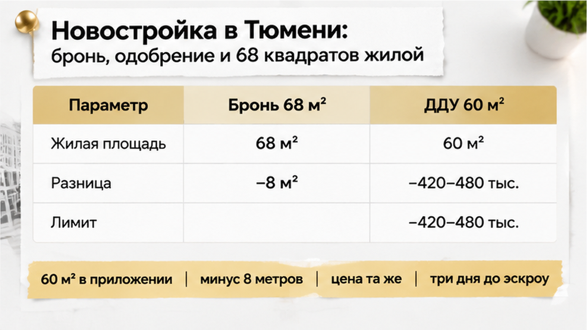

За три дня до эскроу семья открыла приложение к ДДУ и увидела 60 квадратов жилой вместо 68 из брони — цена договора осталась прежней, копейка в копейку. Одобренная ипотека перестала сходиться с суммой, банк пересчитал бы лимит, и до перевода денег оставалось три дня. Восемь метров пропали тихо: офис не звонил, письма не присылал, сумму не пересчитывал. Цифру заметил муж вечером на кухне, когда договор уже лежал на столе рядом с одобрением из банка. Мы сели сверять бумаги построчно и остановили сделку раньше, чем со счёта ушёл хоть рубль.
Такие истории с новостройками Тюмени у меня бывают каждую неделю. Напишите в Telegram или в MAX, пришлите бронь и проект ДДУ, и я сверю цифры до того, как вы переведёте деньги.

Начиналось всё обычно. Семья выбрала квартиру в новостройке и внесла бронь. В брони стояло 68 квадратов жилой, и под эту цифру они уже мысленно расставили мебель и поделили комнаты между детьми. Цену назвали сразу, и она их устраивала. С этой квартирой и этой суммой они пошли в банк за ипотекой.
Банк кредит одобрил, и тут многие выдыхают: раз одобрили, значит, всё проверено. Но банк в первую очередь смотрит на заёмщика и на дом в целом. Сверять, совпадают ли квадраты в брони с квадратами в договоре, он не обязан. А условия до подписи могут поменяться в любой день. Я уже рассказывал, как банк накануне ДДУ поднял ставку и платёж вырос. В этот раз ставку никто не трогал. Поменялась сама квартира, только на бумаге.
Пока шла подготовка, семья спокойно переписывалась с офисом застройщика: дата подписания, список документов, реквизиты счёта. Про другую площадь никто не сказал ни слова. Люди были уверены, что покупают те самые 68 квадратов жилой, за которые отдали бронь.
За три дня до перевода денег пришёл проект договора с приложениями. Основной текст выглядел знакомо: адрес, этаж, номер квартиры, цена как в брони. Приложения они открывать не собирались, это же «просто план». Муж полез туда почти случайно, когда искал, где указана лоджия.
А в плане жилая площадь стоит 60. Не 68, а 60. Восемь метров, почти целая маленькая комната, растворились в таблице. Общая площадь и раскладка по помещениям выглядели так, будто квартира та же самая, только жилых метров стало меньше. Сумма договора при этом не сдвинулась ни на рубль.
Жилая площадь — это комнаты, где живут: спальни и гостиная. Кухня, коридор, санузел и лоджия в неё не входят. Покупатель обычно смотрит на итоговую строку и на цену, поэтому разницу между тем, что показывали в офисе, и тем, что написано в договоре, легко пропустить. Ровно так же пропускают отделку, а потом на приёмке видят голые стены вместо обещанной чистовой. Приложение к ДДУ никакая не картинка для красоты. Это и есть то, за что вы платите.
Вечером мне позвонили. Три дня до эскроу, договор почти готов, одобрение есть, а квартира на бумаге вдруг стала меньше. Жена спросила честно: «Может, это опечатка? Подпишем, а потом исправят?» В этот момент и решается, останутся деньги у вас или уйдут на счёт, откуда их потом так просто не достанешь.
Муж не стал гадать. Он переслал приложение к ДДУ своему менеджеру в банке и задал один вопрос: это что-то меняет? Ответ пришёл на следующий день, и поменялось всё. Банк одобрял ипотеку под квартиру с 68 квадратами жилой, а на подпись принесли 60. Цена при этом та же, копейка в копейку. Для банка это уже другая квартира. Он смотрит, чего стоит залог, а не какую сумму назвал офис продаж.
Лимит пересчитали по новым цифрам. Кредит уменьшился, цена квартиры осталась прежней, и между ними открылась дыра от 420 до 480 тысяч рублей. Точную сумму банк обещал назвать после финального отчёта, но семье хватило и нижней границы. Первоначальный взнос уже собран, отложен и пересчитан не по одному разу. Свободного полумиллиона на счёте нет, и за три дня до эскроу взять его негде.
Люди часто думают, что одобрение и есть финиш. На самом деле банк держит сделку до последнего дня и может пересмотреть условия, если что-то сдвинулось в квартире или в цифрах. Мы уже разбирали, как банк накануне ДДУ поднял ставку и платёж вырос. Бывает и так, что за два дня до подписи страховка съедает запас и одобрение снимают. Здесь дело не в ставке и не в страховке, а итог тот же: деньги, на которые рассчитывала семья, в последний момент перестали сходиться.
У вас на руках бронь и приложение к ДДУ, а цифры в них не совпадают? Пришлите оба документа в Telegram или MAX. Сверим площади и узнаем, что скажет банк, пока деньги не ушли на эскроу.
В офисе продаж новость приняли спокойно, даже слишком спокойно. Менеджер сказал, что в брони «просто по-другому посчитали» и расхождение «техническое». Потом предложил закрыть разницу, которую не даёт банк, своими деньгами: наличными, переводом или частями до сдачи дома. Пересматривать цену никто не собирался. По его словам, восемь квадратов жилой не стоят разговора: квартира та же, окна те же, этаж тот же.
Для семьи это была совсем не мелочь. Это полмиллиона сверху за квартиру, в которой жилой меньше, чем показывали на брони. И был вопрос, на который в офисе никто не ответил. Если цифры поменялись один раз до подписи, что помешает им поменяться снова, когда деньги уже лежат на эскроу и отступать некуда? Жена спросила это прямо в переговорной, и менеджер промолчал.
Решили там же. ДДУ не подписали, деньги на эскроу не перевели. Семья попросила офис письменно объяснить, откуда взялись 60 метров вместо 68, и привести приложение в соответствие с бронью. Пока ответа нет, сделка стоит. Обидно, неприятно, время ушло, но за квартиру с «другой» площадью никто не заплатил ни рубля. Так же вовремя остановились, когда в реквизитах эскроу-счёта обнаружилось чужое юрлицо. В обоих случаях бумаги прочитали до перевода денег, а не после.
Если в ДДУ жилая площадь меньше, чем в брони, а цена та же, вы доплачиваете наличными или рвёте сделку?
Цифры в этой истории никто не прятал. Они стояли в приложении к ДДУ, в плане квартиры с табличкой площадей. Просто открыли его поздно. В табличке обычно три строки. Жилая считает только комнаты, где спят и сидят вечером. Общая считает всю квартиру целиком, со всеми подсобными метрами. Лоджию часто считают по сниженному коэффициенту, поэтому на бумаге она «весит» меньше, чем на глаз. Сверили одну строку, а две другие нет, и восемь метров уходят тихо, без шума.
Я делаю это так, и вам советую так же. Проект ДДУ с приложением просите сразу после брони, а не «в день сделки распечатаем». Кладёте рядом бронь и то, что видел банк при одобрении. Сравниваете одинаковое с одинаковым: жилую с жилой, общую с общей. Если хоть одна цифра поехала, пишете в банк и спрашиваете, пересчитают ли лимит. Ответ нужен письменный и до эскроу. После перевода денег разговор уже про возврат, а не про правку.
Отдельно про фразу «это техническая разница, потом поправим». Устное слово в офисе и строка в договоре живут разной жизнью. Так же люди узнают, что в ДДУ обещали чистовую, а на приёмке голые стены: всё было в бумаге, просто прочитали позже. Хотите «поправим», тогда пусть поправят до подписи: новое приложение или допсоглашение. Слово «потом» деньги не возвращает.
Ниже не пересказ, а карта: на каком шаге цифру ещё можно поймать бесплатно.
| Этап | Что проверить | Что будет, если пропустить |
|---|---|---|
| Бронь | Сразу попросить проект ДДУ с приложением | Цифра из брони кажется окончательной |
| Одобрение банка | По каким площадям считали лимит | Банк пересчитает позже, в последний момент |
| Приложение к ДДУ | Жилая, общая и лоджия строка в строку | Метры пропадают, цена остаётся |
| До эскроу | Письменный ответ банка и офиса | Доплата из своих или возврат через спор |
У этой семьи деньги на месте, потому что остановились за три дня до эскроу, а не через три дня после. Не пришлось искать полмиллиона под давлением менеджера и не пришлось потом доказывать, куда делись метры. Новостройка от этого страшнее не стала. Страшно подписывать приложение, которое видишь впервые за столом в переговорной. Один спокойный вечер со сверкой до денег решает больше, чем любые обещания офиса.